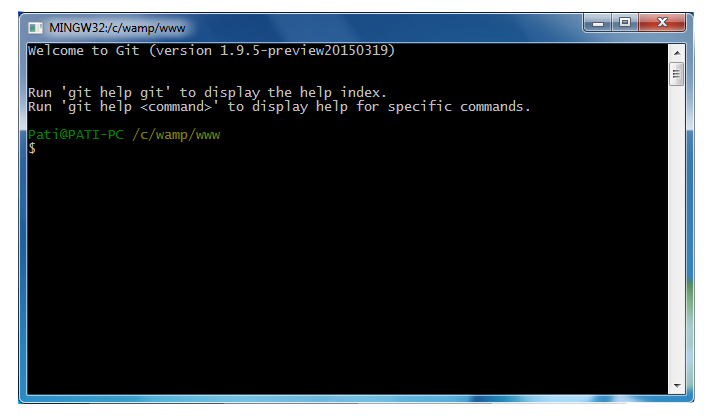

Primeiros contato com Git
Começando
1º Cenário:
Onde um único desenvolvedor trabalha localmente, na sua máquina, desenvolvendo e gerenciando os projetos, sem a participação de outros desenvolvedores.
Utilizando WampServer como servidor local.
Editor de código: NotePad ++ ou Sublime Text 2, geralmente utilizo um ou o outro.
Estrutura de diretorios:
Pasta principal : EstudandoGit

Abrindo pela primeira vez
Ao abrir o Git Bash trará:
♣ Seu nome de usuario "Pati"
♣ O "@"
♣ Nome da máquina que está trabalhando "PATI-PC"
♣ Localização: "/c/wamp/www "
- Por padrão sempre trará o perfil de usuário do Windows se utilizar o Windows ou sua pasta de usuário em outros sistemas operacionais.
- Para alterar o caminho e deixar direto na pasta que utiliza sempre vai no icone do Git Bash, clique com o botão direito, propriedades e altere o campo "Inicar em:" para o caminho da pasta que deseje utilizar.
Não tenho a pasta do projeto criado no Git
Antes de criar um repositório para começar a controlar as versões terá que entrar na pasta que será desenvolvido o projeto.
Para entrar numa determinada pasta utiliza-se o comando "cd nomePasta"
Não é necessário entrar pasta por pasta, inclua o caminho todo da pasta que deseja, "cd nomePasta/pasta/pasta".
Para sair de uma pasta utiliza-se o comando "cd .. " e ele vai sair un nivel da pasta.
Para limpar os comandos que foram digitados, liberando espaço de vizualização, utiliza-se o comando "clear"
Para criar um repositorio do projeto que deseja ser versionado, entrar na pasta e utiliza-se o comando " git init" .
Git vai dizer "Initialized empty Git repository in C:/wamp/www/EstudandoGit/.git", foi inicializado um respositório na localização tal.
Caso já exista um repositório, e digitou novamente " git init ", ele vai dizer Reinitialized existing Git repository in C:/wamp/www/EstudandoGit/.git", seria que foi reinializado o repositório tal.
Se for na pasta do projeto, verá la dentro que foi criado uma pasta com o nome ".git" , é dentro dela que será armazedo todas as versões do projeto.
Está pasta é oculta pelo gerenciador do Windows, para ver terá que configurar para mostrar pastas ocultas.
Já tenho pasta do projeto criado no Git
Para saber o status que se encontra ou como está local de trabalho, utiliza-se o comando " git status ".
Caso não tenha nada no repositório ele vai dizer "nothing to commit (create/copy files and use "git add" to track)".
Está sugerindo que crie arquivo ou copie e utlize o comando "git add" para começar a traquear/acompanhar estes arquivos através do controle de versão.
Incluo os primeiros arquivos do projeto na pasta e vou adicionar no Git
Para saber o status que se encontra ou como está local de trabalho, utiliza-se o comando " git status ".
Vai retornar "untracked files: (use "git add <file> ..." to include in what will be committed)",
está dizendo que tem arquivos que não estão sendo traquear pelo Git , mostra quais são, e que deve adicionar estes arquivos usando o comando "git add".
Para adicionar o arquivo no controle de versão utiliza-se o comando " git add nomeArquivo" .
Para adicionar varios arquivos de uma mesma extensão ao mesmo tempo, utiliza-se o comando " git add * .extensão" .
Para adicionar todos arquivos no diretorio ao mesmo tempo, utiliza-se o comando " git add ." .
Adicionado no Git, porém ainda não comitado
Para saber o status que se encontra, utiliza-se o comando " git status ".
Vai retornar " Changes to be committed: (use "git rm --cached <file> ..." to unstage)" ou " Changes to be committed: (use "git reset HEAD <file> ..." to unstage) mais os arquivos.
Quando utiliza o git add, está fazendo o arquivo sair do Working Directory, passando o arquivo para a Staging Area, a sala de espera antes mandar/comitar/salvar as alterações foram feitas.
Depois que utilizou o git add é preciso confirmar as mudanças do projeto. Próximo passo é tirar da Staging Area, do intermediario e passar para repositorio confirmando as mudanças
Para salvar/comitar as alterações, utiliza-se o comando " git commit -m "mensagem" " .
Coloque sempre uma mensagem que ira identificar o que foi alterado neste comite para seja encontrado com facilidade.
Vai retornar o resumo do que foi feito.(imagem ao lado)
Para saber o status que se encontra, utiliza-se o comando " git status ".
Vai retornar " nothing to commit, working directory clean", dizendo que seu diretorio de trabalho está vazio.
Tem um arquivo que não quero que o Git versione ignorando
Para o Git ignorar um arquivo, crie um arquivo com o nome .gitignore
Em cada linha escreva o nome do arquivo que deixa ser ignorado.
Quero comitar sem adicionar
Para comitar, sem adicionar, em curtando o trabalho , utilizo o comando " git commit -a -m "mensagem" "
O -a serve para pular a etapa do adicionar na Staging Area.
Quero consultar todas as alterações que foram feitas no arquivo mas ainda não foi adicionado na sala de espera
Para consultar todas as alterações que foram feitas num arquivo que está no sei diretorio de trabalho, mas ainda não foram adicionado na sua Staging Area utiliza-se o comando " git diff ".
Resaltando que terminei de alterar um arquivo, vou no terminal e dou o comando "git status", vai retornar um resumo dizendo que foi feito uma alteração e em qual arquivos.
Mas quero saber o que foi alterado no dentro do aquirvo , como que vou consultar isto?
O comando "git diff" mostrar está alteração.
Adicionei o arquivo na Staging Area com o comando "git add ."
Dou um comando "git diff" , ele não acontece nada. Isto acontece pelo fato ter nenhuma alteração no meu diretorio de trabalho que não esteje na minha Staging Area.
Ele trouxe uma páginação e terminou com END dizendo que terminou a tela o relatório, para voltar para o terminal pressione a letra Q .
Para saber alterações que foram feita e que está na sua Staging Area esperando para ser comitado
Quero vizualizar todos os comites que foi feito.
Para vizualizar os comites que foram feitos no seu projeto, desde o inicio, utiliza-se o comando " git log "
Mostrará um historico de todos os comites que foi feito.
Pode ver que tem uma linha que diz commit e uma chave, está chave serve para referenciar este comite, sendo assim cada comite terá uma diferente.
Utiliza-se está chave no momento que deseja voltar a versão a atual para a versão do comite.
Aparecendo do ultimo comite para o primeiro comite do projeto.
Mostrando o autor, o e-mail e a data que foi feita o comite.
Caso queria vizualizar o que foi feito em cada comite mais detalhado, utiliza-se o comando " git log -p "
Vai mostrar em ordem descrecente, do atual para o mais antigo, trará também o diff mostrando o que foi feito em cada alteração e arquivo. Mostrando assim uma junção de git log com git diff.
Mostrara em paginação , pressione enter para ir acompanhando linha por linha.
No final aparecerá END dizendo que terminou a tela o relatório, para voltar para o terminal pressione a letra Q .
O projeto é grande e tenho noção do comite que quero ver
Ai surge um problema, dependendo do tamanho do projeto fica muito longo e cansantivo verificar linha por linha, e tendo uma noção qual deseja ver, sem precisar criar uma páginação.
Para limitar o tamanho do comites que deseja ver , utiliza-se o comando " git log -p -1"
O -1 pode se por -2 ou -n, sendo o número de entradas deseja trazer.
Quero vizualizar somente o código e a mensagem de cada comite
Para ver apenas o código com a mensagem de cada comite utiliza-se o comando com paramentros "git log --pretty=oneline"
Quero vizualizar de uma forma bem detalhada porém simples todas as alterações que foram feitas
Utiliza-se a interface grafica que o proprio Git disponibiliza para vizualiar este relatórios, através do comando " gitk ".
Vai abrir a interface grafica trazendo o projeto que está sendo feito o versionamento mostrará:
♣ A cronologia dos comites, feito por quem e revisado por quem.
♣ A chave do comite.
♣ O que foi modificado e quais arquivos.
Como faço se eu quero juntar alteração que acabei de fazer (ainda não add ou comitei) com o ultimo comite que fiz ?
Vou adicionar o arquivo na minha Staging area com o comando git add.
E vai utilizar o comando " git commit --amend -m "edição" "
Pode alterar tanto os dados, os arquivos que foram enviados adicionando novas alterações a ele, ou também a mensagem definindo uma nova mensagem.
Lembrando é sempre o ultimo comite que foi feito com as alterações que fez mas ainda não comitou.
Ele muda a chave e a mensagem porem não cria um novo comite, apenas altera o ultimo que foi feito.
Pode conferir com o comando" git log --pretty=online.
Como faço remover/retirar um arquivo que enviei para a Staging Area porém não quero que o Git versione?
Para remover um arquivo que foi enviado indevidamente para a Staging Area utiliza-se o comando " git reset HEAD nomeArquivo.html " .
Como reverter um arquivo que foi alterado?
Resolve fazer teste num arquivo que baixou de um determinado projeto.
Pega o arquivo e começa modificar aleatoriamente e chega um ponto onde não lembra mais o que modificou.
Então tenho que reverter ao formato original ou comitar as infomações que foi alterado.
Peguei arquivo inclui novos codigo, colocando no meio do arquivo e já não sei mais o que eu alterei. Vou no terminal do Git e consulto o estatus e ele me disse que o arquivo foi modificado, ai eu lembro que não deveria ter modificado este arquivo deixando de forma original.
Para descartar as mudanças que foram feitas no arquivo utiliza-se o comando " git checkout -- nomeArquivo " .
Deletei um arquivo do projeto e tenho que deletar do git
Para deletar um arquivo do Git Directory utiliza-se o comando " git rm nomeArquivo " .
Quero criar um ponto de atalho para um determinado ponto do sistema que está sendo desenvolvido.
Geralmente os desenvolvedores utiliza as tags para criar marcações nas versões diferentes de um sistema.
Utilizando uma tag terá um atalho, uma forma facilitada de trocar, reverter o status do sistema para uma determinada tag, ou seja data e hora expecifica, e assim poder vizualizar poder alterar se for o caso, os arquivos daquela versão, ou poder fazer consultas de uma forma rápida no código fonte de como ele era naquela versão.
Tag é um ponteiro para um ponto expecifico do sistema.
Pra listar as tags que estão no sistemas utliza-se o comando " git tag " .
Pra criar uma tag no sistemas utliza-se o comando " git tag -a nomeTag -m "mensagem" " .
Deve sempre colocar uma mensagem para facilitar a localização do que se procura.
O -a serve para criar uma tag anotada, uma tag simples sem anotação ela não guarda quem foi o usuário, data e hora da criação.
O -a significa que está sendo criado uma tag anotada que trará informações de usuário, data e hora que foi criada.
A tag sempre é criada no seu comite atual, no que você está trabalhando agora no seu controle de versão.
Pode se criar também uma tag antiga do sistema.
Pode se criar também uma tag antiga do sistema , com um comite antido do seu sistemas, como fazer isto?
Primeiro vamos listar os comites que tem no sistema com o comando " git log --pretty=online " .
Aparecendo assim cada comite seu código chave de referecia que é unica dentro do controle de versão.
Vou criar uma tag com o comando " git tag -a nomeTag chaveComite " .
Para pegar a chave completa e não ter problema, vai no icone do terminal, botão direito, editar, marcar, seleciona o código que deseja, da um enter pra copiar, editar e colar.
Quero saber mais sobre uma tag
Para saber mais detalhes sobre uma tag que foi criada utiliza-se o comando " git show nomeTag " .
Vai mostar quem foi usuário que criou, data e hora que foi criada, a mensagem que foi atribuida , qual o comite que foi utilizado para criar a tag, qual o autor e data do comite e mais uma informações adicionais sobre o comite.
Como fazer para utilizar uma tag
Quero vizualizar os arquivos que existia no meu comite inicial, na versão da primira tag.
Para vizualizar os arquivos referente a um determinada tag, utiliza-se o comando " git checkout nomeTag " .
Ele vai fazer o checkout daquela tag, fazer a troca dos meus arquivos para os arquivos que estavam naquela versão.
Confira os arquivos, note que não são iguais.
E no terminal vai ser mostrado a versão, a tag que o terminal está, na frente do caminho da pasta, dentro de parenteses.
Como deletar uma tag
Para deletar uma tag utiliza-se o comando " git tag -d nomeTag " .
Como criar e em qual momento se utiliza branch
No momento de se fazer teste ou criar uma nova versão, não é interessante utilizar uma tag para controlar ou pra criar ambientes diferenciados de desenvolvimento.
O melhor a utilizar é os branches que são as ramificações dentro do controle de versão.
Branch permite que você trabalhe com várias ramificações, com vários segmentações diferentes do sistema, podendo fazer comites em uma ramificação e esse comite não irá modificar outras ramificações.
Por padrão, quando você cria um repositorio no Git ele cria um branch chamado master, sendo este o branch padrão dele, é o que aparece na frente do caminho.
Branch master é o branch principal de trabalho.
Tenho um sistema que está instalado no cliente, que é o branch master, quero fazer teste, uma implementação de uma funcionalizade nova neste sistema.
Não quero correr o risco do cliente ligar e pedir uma alteração no sistema, então não posso fazer o teste no branchMaster, então crio um branchTeste.
Cada empresa trabalha de uma forma, ambiente de produção, ambiente teste, ambiente de desenvolvimento, ambiente de homologação entre outros ...
Cada ambiente deste pode ser um branch diferente.
Para criar um brach utiliza-se o comando " git branch nomeBranch ".
Quero fazer a troca de Branch
Para fazer a seleção/transição/troca de branch para outro branch utiliza-se o comando " git checkout nomeBranch ".
Ou Seja, para colocar o working directory no branch escolhido.
Vai aparecer a mensagem "Switched to branch 'nomeBranch' " dizendo que foi mudado de branch.
Com isto você sai de uma ramificação e passa para outra. Trocando os arquivos que branch que você está pelos arquivos do branch que deseja ir.
Quero criar e já fazer a troca de Branch
Pode se fazer direto, a criação e a mudança de branch. Utiliza-se o comando " git checkout -b nomeBranch" .
Com isto ele vai criar e já vai fazer a troca de branch, para aquele branch que você ta designando no comando.
Explicando a mudança de branch
Está desenvolvendo uma nova funcionalidade no branchTeste do cliente.
Ele liga e pede uma alteração no sistema que está no ar, que seria o branchMaster.
Estou fazendo teste no sistema, como vou fazer para pegar o sistema que o cliente tem rodando?
No meu terminal, estou no branchTeste.
Consulto o estatus, ele me mostra que tem arquivos para ser comitados, caso queria, faça o comite do que você está fazendo no momento. Isto com a intenção de ter o trabalho salvo pelo Git.
Agora dou um" git checkout brachMaster " , para sair do branchTeste e pegar os arquivos que estão rodando no cliente.
Trocando de ambiente, do teste que eu estava desenvolvendo para o ambiente master que o cliente vizualiza no momento.
Faço então as alterações requisitadas pelo cliente.
Terminei as alterações e quero voltar a desenvolver a funcionalidade que estava trabalhando antes.
Troco de branch utilizando novamente o comando "git checkout brachTeste ".
Termino de desenvolver a nova funcionalidade, dei comite e deixei tudo certinho no ambiente de teste, no branchTeste no caso.
Passando alterações de um branch para outro
Agora volto para o branchMaster " git checkout brachMaster " .
Mas no branchMaster não tem a nova funcionalidade, como faço para incluir?
Para passar as alterações feitos no branch teste para o branch master, utiliza-se o comando " git merge branchTeste" .
Lembrando que eu vou trazer as alteração do branchTeste para o branchMaster, então tenho que está no brachMaster quando der o comando.
Para deletar um branch que perdeu a utilidade
Acabei de utilizar o branchTeste, ele já não tem mais serventia para mim.
Para deletar um branch utiliza-se o comando " git branch -d nomeBranch ".
Para vizualizar todos os branhes existentes
Para listar todos os branches existentes no repositório utiliza-se o comando " git branch ".
Solucionando conflitos
Tem dois branches, branchTeste1 e branchTeste2, os dois tem a mesma função.
No branchTeste1 foi alterado a função e comitado o arquivo.
No branchTeste2 foi alterado a mesma função, na mesma linha mas de forma diferente do branchTeste1.
O branchTeste2 é comitado minutos depois que foi comitado a função do branchTeste1.
Agora é preciso fazer a intregação do arquivo do branchTeste1 com o arquivo do branchTeste2.
Para intregra as alterações de um arquivo utliza-se o comando " git merge branchTeste ".
Feito um merge do branchTeste1 para o branchTeste2 que foi o ultimo a ser alterado.
Ele retorna "Conflict (content): merge conflict in nomeArquivo / Automatic merge failed: fix conflicts and then commit the result", um conflito no brabchTeste2, que é onde estou tranzendo o arquivo, a função do branchTeste1.
Dizendo que o merge automatico falhou, tenho que corrigir este conflito e depois comitar o arquivo.
Mostrar também na frente do caminho da pasta, junto com o nome do branch a palavras Merging.
No código fonte, poderá vizualiar :
Lembrando você está no branchTeste2, por isto no arquivo ele vai mostrar a versão do branchTeste2 com comentário " <<<< HEAD " mas a função.
Logo a abaixo ele vai mostrar " = = = =" mais a função referente branchTeste 1 e finaliza pelo comentário " >>>>>> branchTeste1".
Agora você terá que escolher qual das duas funções será mantida e deletar os comentários e a outra função que não mais será util.
Após corrigir, escolher qual função deseja utilizar, comita o arquivo corrigido.
Agora comitado a correção ele vai retornar la na caminho da pasta que está tralhando apenas o nome do branch no caso branchTeste2, não tem mais a palavra Merging.